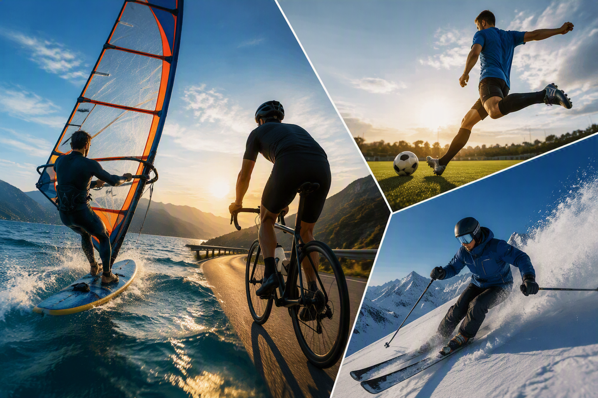
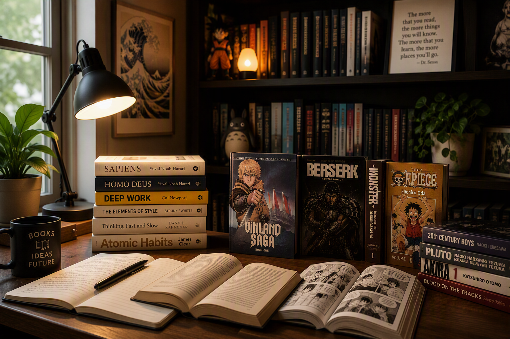
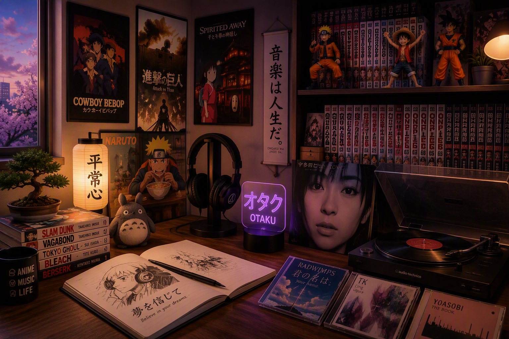

About Me
Learn more about my interests, passions and activities beyond work.
Sports
Sports have always been an important part of my life. Whether on the water windsurfing, on the slopes skiing, cycling through mountain roads or playing football, I enjoy activities that combine physical challenge, discipline and a connection with nature. These experiences help me stay focused, resilient and maintain a healthy balance between work and leisure.

Books, Comics & Manga
Reading is one of my favorite ways to learn, reflect and explore new perspectives. Alongside books on science, technology, history and personal development, I enjoy graphic novels and manga, appreciating their ability to combine storytelling, art and imagination. Both literature and comics continue to inspire my curiosity and lifelong passion for learning.

Japanese Anime & Music
Japanese anime and music are among my favorite sources of inspiration and relaxation. I appreciate anime for their unique storytelling, memorable characters and ability to explore complex themes through creativity and imagination. Alongside this passion, I enjoy listening to Japanese music, lo-fi beats and soundtracks that create the perfect atmosphere for reading, studying and creative work.
